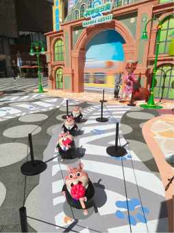
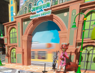
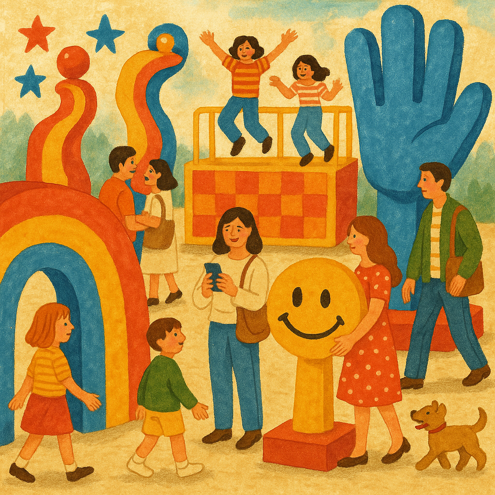

一天我突然发现楼下多了很多《疯狂动物城》的快闪。嗯，其中有一个我印象最深刻的就是这个小老鼠。它也出现在动画片里面，但现场把它搭建出来，观看的感受还是很不一样。
2025.11，深圳楼下路边的疯狂动物城快闪
G1 小老鼠雕塑与快闪活动 → left [S_overlap_F1, S_overlap_F2]
G2 观看现场感受 → right [S_text_F3]
画布: 2235 × 1397 px
规划耗时: 4215.74 ms
OmDet: 11 个检测 (animal sculpture in the background, animal statue in the background, cow, hat, horse, lamp, mouse sculpture, mouse statue, person, shoe, umbrella)
S_text_F3 AI生成图片 (耗时 53643.54ms)
S_overlap_F1 crop: [88,234]-[140,315] 来源=omdet 匹配=mouse statue(0.46), mouse sculpture(0.46) 最高分=0.46
S_overlap_F2 crop: [64,0]-[253,145] 来源=omdet 匹配=animal statue in the background(0.38), animal sculpture in the background(0.37) 最高分=0.38